Sketching Audience Insights
Paul Stanford · Permutive · Scala in the City
Contents
- Intro to Permutive
- Mapping a Customer Problem to a Data Type
- Toy Sketches
- Real Sketches
- Using Sketches with Pinot
- Putting It All Together
What is Permutive?
We help publishers, broadcasters, and advertisers collaborate on data across the open web
- Publishers install our SDK on their sites
- SDK captures page view events (on-device, privacy-first)
- Events build cohorts (e.g. “read 3+ cat articles this month”)
- Cohorts combine into audiences using boolean logic
- Insights: understanding your audiences — reach, engagement, overlap, and more
What is a Cohort?
A group of users defined by a rule
-
First-party — based on behaviour you
observe directly
“read 5+ sports articles this month” -
Third-party (optional) — from external data
providers (demographics, purchase data, interests)
“students aged 18–24” or “in-market for a new car”
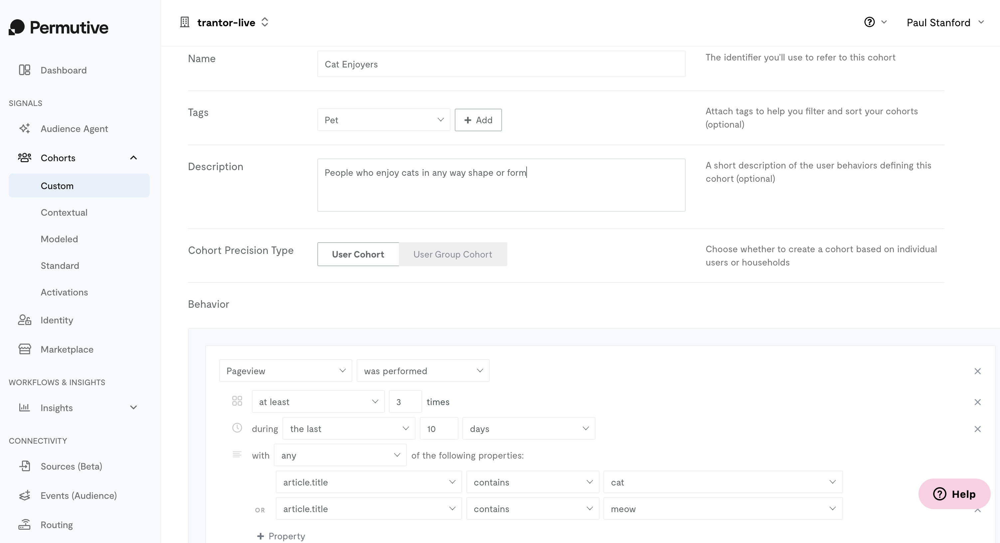
The Data Pipeline
All PageView events end up in BigQuery
From there we build Audience Insights and Campaign Insights to help customers understand their first party data
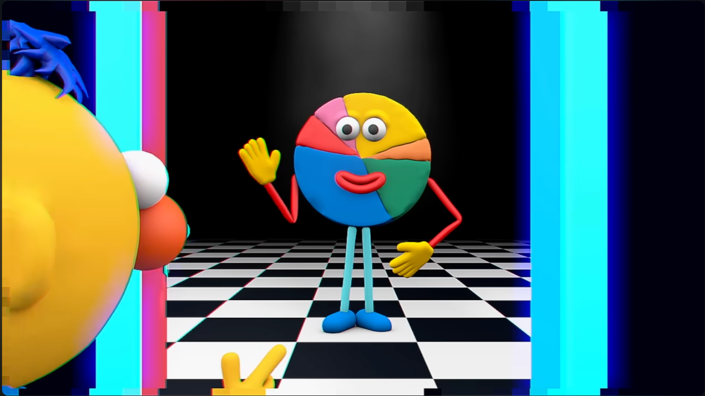
Audience Insights
- Engagement: unique users, sessions, pageviews, average time spent
- Technographics: device, platform, browser, location
- Index & Overlap: how cohorts compare to each other
- Content Read: which articles, categories, authors resonate
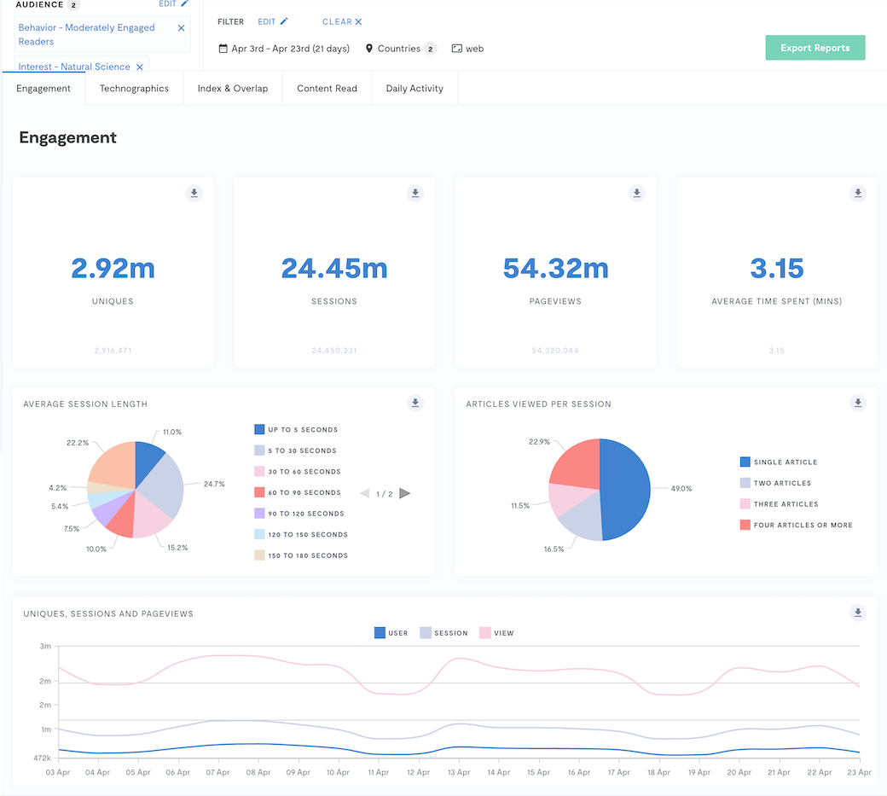
Campaign Insights
Same metrics, same engine; we just treat campaign IDs as a dimension rather than cohort IDs
The Daily Bugle
J. Jonah Jameson wants to monetise his audience
An advertiser is selling new webshooters, they want to reach spider-people from across the spiderverse
He's going to use insights to refine and sense check his audience
First Attempt
JJJ has two cohorts to start with:
- Spider Lovers — 1st party data (read ≥N spider articles/month)
- Mask Buyers — 3rd party purchase data
JJJ decides that people who like spiders AND buy masks are probably superheroes interested in web shooters
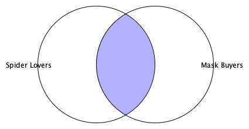
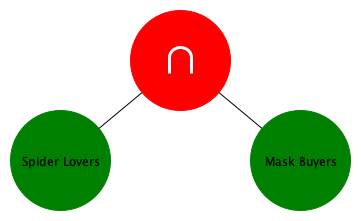
How Do We Model This?
enum SetExpressionV1[A]:
case Value(value: A)
case Intersect(left: SetExpressionV1[A], right: SetExpressionV1[A])
Intersect(Value("Spider Lovers"), Value("Mask Buyers"))
But Wait…
Within the spiderverse some spider-people only wear masks, some only wear tights. JJJ, being very wise, realises this and decides he must include both!
- Tights Buyers — 3rd party purchase data
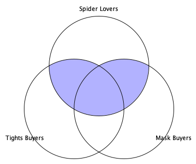
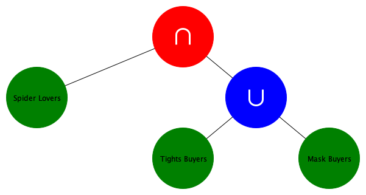
We Need Union
enum SetExpressionV1[A]:
case Value(value: A)
case Intersect(left: SetExpressionV1[A], right: SetExpressionV1[A])
enum SetExpressionV2[A]:
case Value(value: A)
case Intersect(left: SetExpressionV2[A], right: SetExpressionV2[A])
case Union(left: SetExpressionV2[A], right: SetExpressionV2[A])
Intersect(
Value("Spider Lovers"),
Union(
Value("Tights Buyers"),
Value("Mask Buyers")
)
)
One More Thing…
Older spider-people probably already have great webshooters from countless years fighting extremely camp villains.
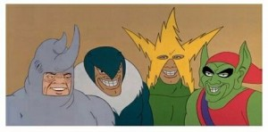
JJJ decides that he now wants to target students as he thinks they are likely to be considering their first serious webshooter purchase.
- Students — 3rd party demographic data
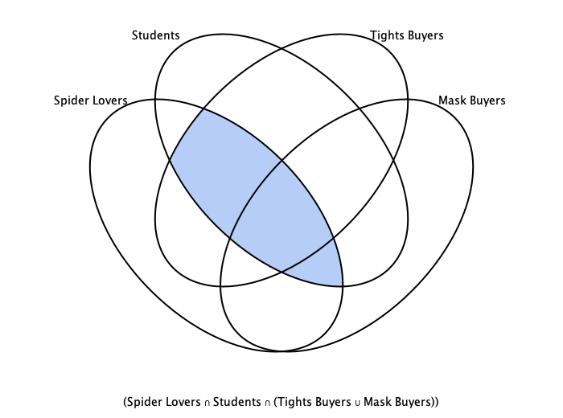
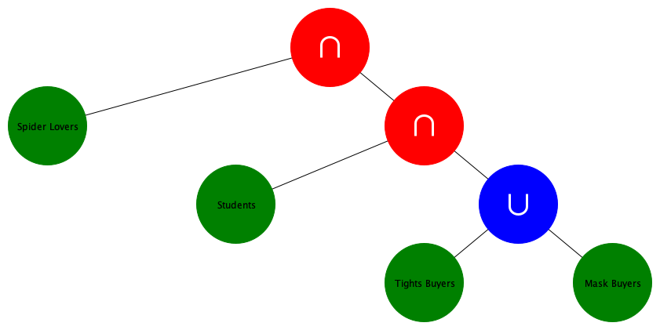
Rose Trees
Binary trees get awkward with 3+ operands so we might as well use Rose Trees instead.
enum SetExpressionV2[A]:
case Value(value: A)
case Intersect(left: SetExpressionV2[A], right: SetExpressionV2[A])
case Union(left: SetExpressionV2[A], right: SetExpressionV2[A])
enum SetExpressionV3[A]:
case Value(value: A)
case Union(union: List[SetExpressionV3[A]])
case Intersect(intersect: List[SetExpressionV3[A]])
Intersect(List(
Value("Spider Lovers"),
Value("Students"),
Union(List(Value("Tights Buyers"), Value("Mask Buyers")))
))
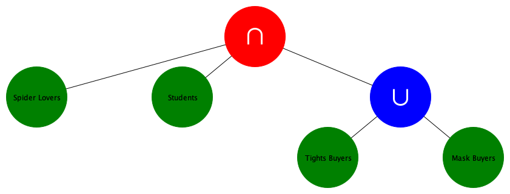
Making Illegal States Unrepresentable
What does Union(List()) or
Intersect(List()) even mean?
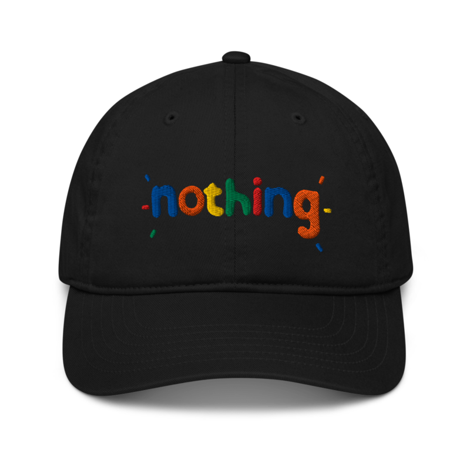
In principle it shouldn't even be possible to express this! So let's make it impossible.
Making Illegal States Unrepresentable
enum SetExpressionV3[A]:
case Value(value: A)
case Union(union: List[SetExpressionV3[A]])
case Intersect(intersect: List[SetExpressionV3[A]])
enum SetExpression[A]:
case Value(value: A)
case Union(union: NonEmptyList[SetExpression[A]])
case Intersect(intersect: NonEmptyList[SetExpression[A]])
NonEmptyList (from the cats library) guarantees at
least one operand at compile time
Here is a picture of a cat that my friend took while we were on holiday that you can see as a reward for me going on about ADTs for ages

How Many Possible Queries?
With just 4 cohorts, how many distinct set expressions can we write?
52
52 distinct expressions over 4 sets
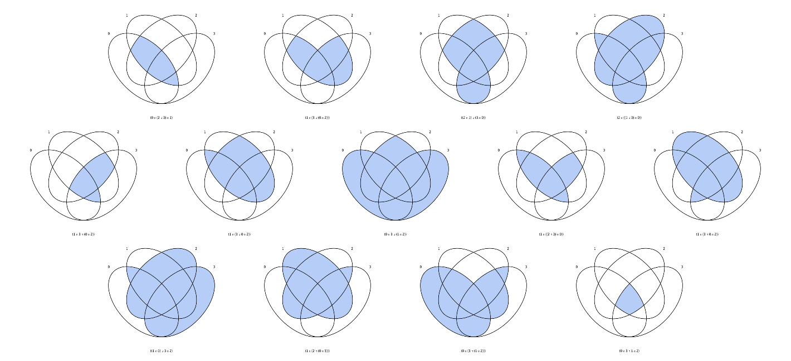
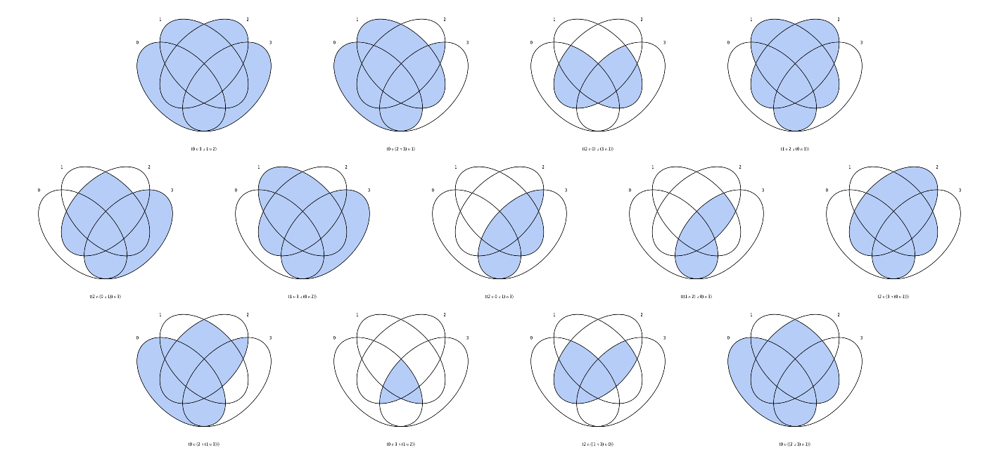
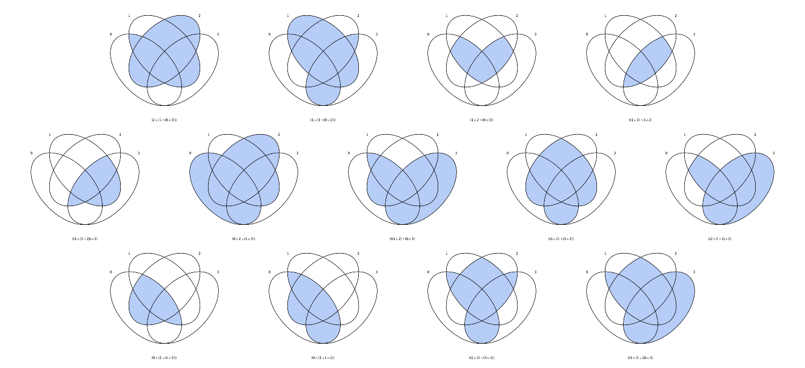
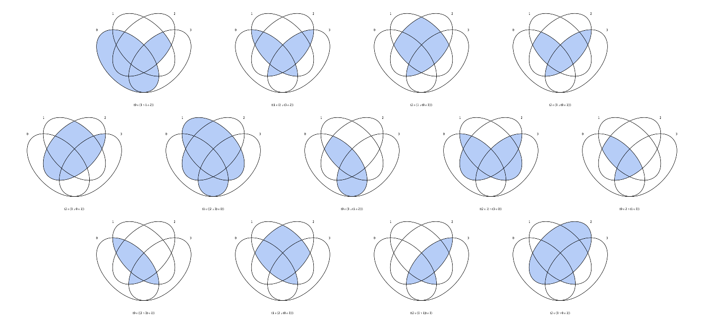
Let's Organise these Pictures a Bit
We can group them by the total number of regions that are included just because it's fun.
1 region (1 expression)
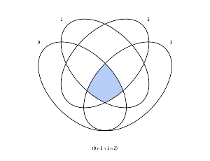
3 regions (6 expressions)
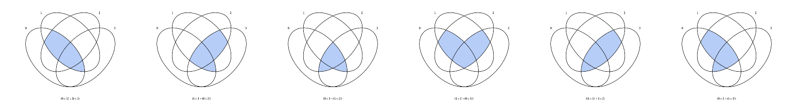
5 regions (12 expressions)
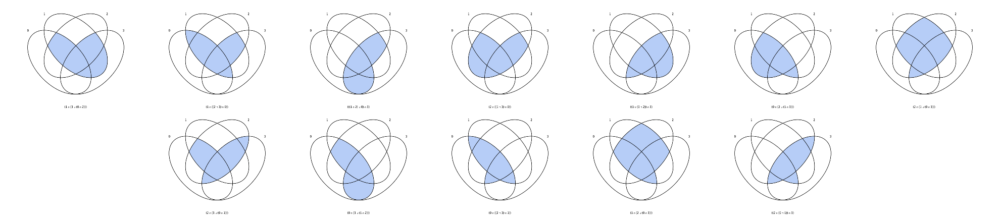
7 regions (7 expressions)
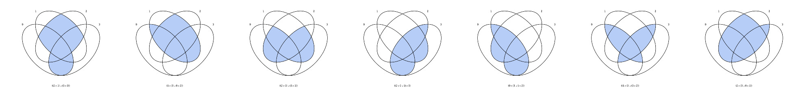
9 regions (7 expressions)
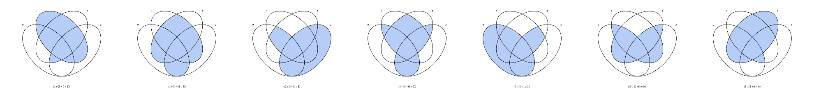
11 regions (12 expressions)
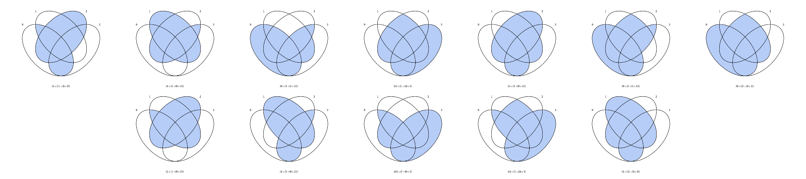
13 regions (6 expressions)
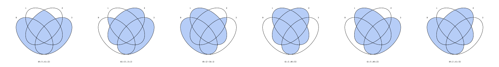
15 regions (1 expression)
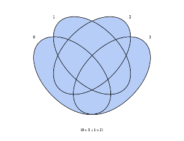
The #Distinct Expressions Grows Quickly with the #Cohorts
| Cohorts | Distinct expressions |
|---|---|
| 1 | 1 |
| 2 | 2 |
| 3 | 8 |
| 4 | 52 |
| 5 | 472 |
| 6 | 5,504 |
| 7 | 78,416 |
Something's Missing
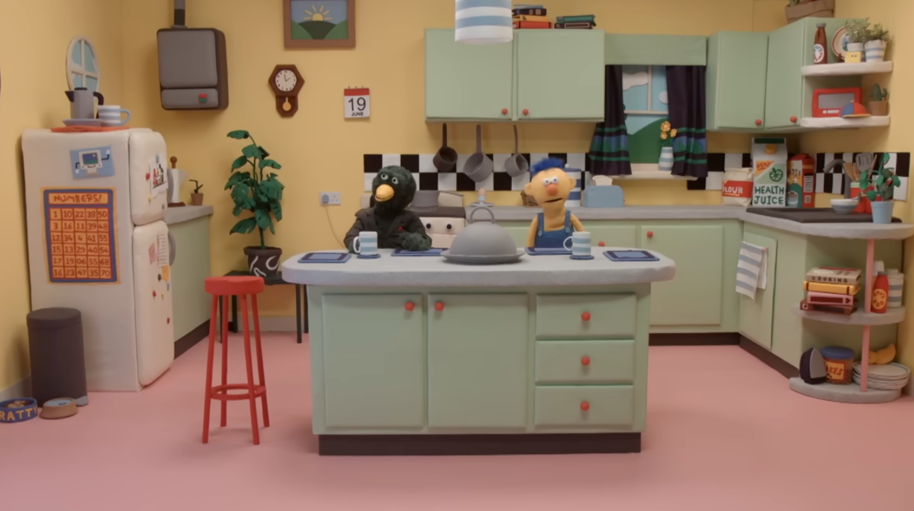
Something's Missing
We're clearly not representing every possible Venn diagram. I suspect that this is because we don't have Difference.
How might we change the ADT to add Difference?
enum SetExpression[A]:
case Value(value: A)
case Union(union: NonEmptyList[SetExpression[A]])
case Intersect(intersect: NonEmptyList[SetExpression[A]])
case ???
In a classic move I will leave this as an exercise.
Optimising Set Expressions
It is reasonable to assume that each set operation has some cost
Fewer operations likely means faster evaluation
Optimising Set Expressions
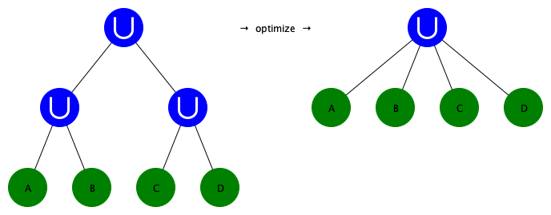
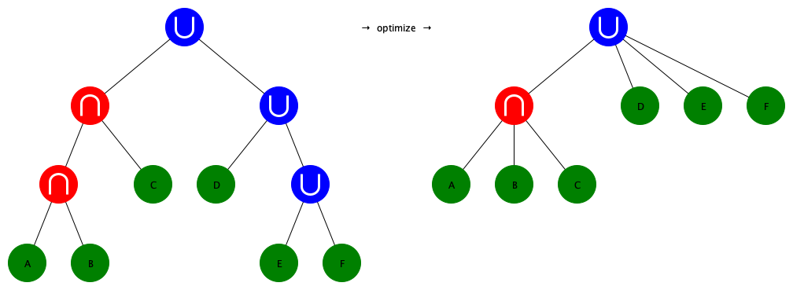
Optimising Set Expressions
def optimize[A](expr: SetExpression[A]): SetExpression[A] =
expr match {
case x @ Value(_) => x
case Union(xs) =>
xs.map(optimize).flatMap {
case Union(inner) => inner
case other => NonEmptyList.one(other)
} match {
case NonEmptyList(head, Nil) => head
case flattened => Union(flattened)
}
case Intersect(xs) =>
xs.map(optimize).flatMap {
case Intersect(inner) => inner
case other => NonEmptyList.one(other)
} match {
case NonEmptyList(head, Nil) => head
case flattened => Intersect(flattened)
}
}
General vs Specialised optimisation
This optimisation works on SetExpression[A] for
any A
I think it's cool that this optimisation works even though we know absolutely nothing about the underlying sets!
But once we know what A is, we may be able to do even
more
A more constrained type can potentially unlock more specialised optimisations based on how the sets are actually stored and queried
The Question
JJJ needs to show the advertiser that this audience is big enough
“How many unique users are in this audience?”
We need to evaluate a SetExpression —
but what should A be?
Naive Approach: Set[UserId]
type Audience = SetExpression[Set[UserId]]
- Query BigQuery for each cohort's user IDs
-
Compute intersections and unions on
Set[UserId] - Count the result
But Let's Not Because...
- Cohorts can have millions of user IDs
- BigQuery queries are slow and expensive at this scale
- Complex set operations over millions of elements can get a bit mad
- Doesn't scale as cohort count grows or if we look over larger time periods
The Counting Problem
How do you count distinct users across billions of events?
- Count exactly: store every user ID → huge memory
- Count approximately: probabilistic data structures
The Plan
Let’s build a toy ApproxSet from scratch
- Start with just counting
- Worry about intersections and unions later
- There's nothing better than having a go at something by yourself (and inevitably getting it horribly wrong) for building intuition
A Mathematical Tube Carriage
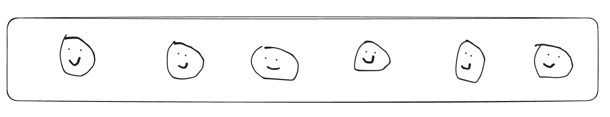
Imagine respectfully standing in a tube carriage
Your headphones have broken and you're not the sort of person who plays your TikToks out loud so to pass the time you decide to estimate how many people are in your carriage
Sparse vs Packed
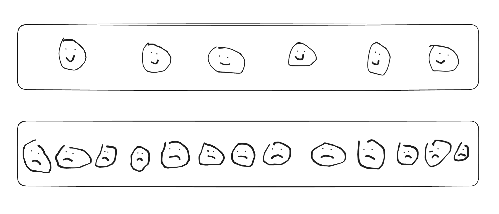
You figure that if people are packed closely together there are probably loads of them in carriage
Take a Sample
You can only really see the people who happen to be close to you on the tube so you use them as your sample
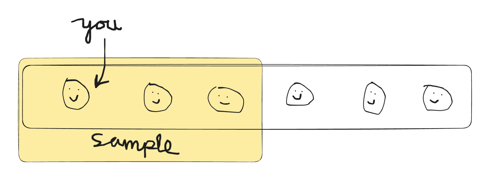
Since this is a silly contrived analogy you could sample from anywhere, but let's always take the leftmost $k$ people
Take a Sample
This is true for a densely packed tube carriage too, so the sample in such a carriage would look like this
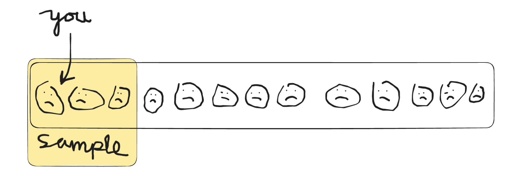
As with the sparse carriage $k = 3$ in this diagram
Take a Sample
You bravely ask the people near you how far away from the left side of the carriage they are
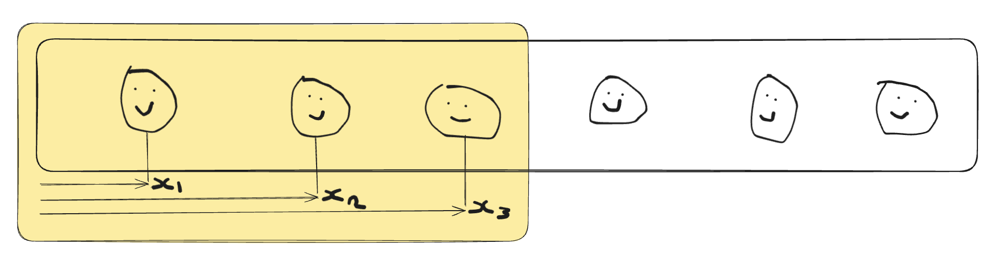
None of them think this is a strange ask at all and the $k$th person happily tells you they are at a distance $x_k$ from the LHS
The (Extremely Hand Wavy) Maths
Now that you have the distances you can work out on average how close together people are standing to each other. Using this "average gap" you can work out roughly how many people are in the carriage by dividing the length of the carriage by this average gap
The (Extremely Hand Wavy) Maths
Our $k$ people stand at positions $x_1, x_2, \ldots, x_k$
The $k$ gaps are:
The (Extremely Hand Wavy) Maths
Almost everything cancels:
Total gap $= x_k$
Average gap $= \dfrac{x_k}{k}$
The Estimate
Estimated count = total length / average gap:
$$\hat{N} = \frac{\text{length}}{\text{average gap}} = \frac{\text{length} \cdot k}{x_k}$$
But then we remember that this is a very special mathematical tube carriage that has a length of $1$, so:
$$\boxed{\hat{N} = \frac{k}{x_k}}$$
What Do We Need for Our ApproxSet Data Type?
We have an estimator: $\hat{N} = k / x_k$
Now we need a data structure that keeps only the $k$ smallest distances we've seen. A sorted set basically gets us halfway there, we just need to ensure that it is bounded!
If the set is full and someone tries to add an element (that is smaller than the largest element in the set) we shall evict the largest element from the set to make room!
Building Block: BoundedSortedSet
case class BoundedSortedSet[A: Ordering](
maxSize: Int,
underlying: SortedSet[A]
) {
def +(elem: A): BoundedSortedSet[A] =
if underlying.size >= maxSize && elem >= underlying.last
then this // above threshold, skip
else
val updated = underlying + elem
if updated.size > maxSize
then copy(underlying = updated - updated.last)
else copy(underlying = updated)
}
A sorted set that only keeps the smallest k elements
BoundedSortedSet: Set Operations
def union(that: BoundedSortedSet[A]): BoundedSortedSet[A] =
val newMaxSize = math.min(this.maxSize, that.maxSize)
val merged = this.underlying.union(that.underlying).take(newMaxSize)
BoundedSortedSet(newMaxSize, merged)
def intersect(that: BoundedSortedSet[A]): BoundedSortedSet[A] =
val newMaxSize = math.min(this.maxSize, that.maxSize)
val common = this.underlying.intersect(that.underlying)
BoundedSortedSet(newMaxSize, common)
From Tube Carriages to Code
Our estimator needs numbers in $[0, 1)$
But real data is strings, UUIDs, user IDs…
Hash each element to map it into $[0, 1)$
def hashToUnitInterval(value: String): Double =
(value.hashCode & Int.MaxValue).toDouble / Int.MaxValue
String.hashCode has poor distribution
for short inputs
ApproxSet V1
case class ApproxSet(hashedSample: BoundedSortedSet[Double]) {
def +(item: String): ApproxSet =
ApproxSet(hashedSample + hashToUnitInterval(item))
def estimate: Double =
hashedSample.underlying.size.toDouble / hashedSample.underlying.last
}
- Hash each element to [0, 1)
- Keep the smallest $k$ hashes
- Estimate = $k / x_k$ — just like the tube carriage!
ApproxSet V2: Set Operations
Sketches support union and intersection, we just run the operations on the retained hashes
case class ApproxSet(hashedSample: BoundedSortedSet[Double]) {
// ... + and estimate as before ...
def union(that: ApproxSet): ApproxSet =
ApproxSet(this.hashedSample.union(that.hashedSample))
def intersect(that: ApproxSet): ApproxSet =
ApproxSet(this.hashedSample.intersect(that.hashedSample))
}
Measuring the Bias
Utility functions
def randomUUIDs(n: Int): List[String] =
List.fill(n)(java.util.UUID.randomUUID().toString)
def averageOver(trials: Int)(runTrial: => Double): Double =
(1 to trials).toList.foldMap(_ => runTrial) / trials
Single Sketch Error
def singleSketchError(maxSize: Int, setSize: Int): Double = {
val data = randomUUIDs(setSize)
val approxSet = ApproxSet.fromList(data, maxSize)
(approxSet.estimate - setSize) / setSize
}
Intersection Error
// two sets of the same size with an overlap fraction
def intersectionError(maxSize: Int, setSize: Int, overlapFraction: Double): Double = {
val pool = randomUUIDs(setSize * 2)
val overlapSize = (setSize * overlapFraction).toInt
val setA = pool.take(setSize)
val setB = pool.drop(setSize - overlapSize).take(setSize)
val approxSetA = ApproxSet.fromList(setA, maxSize)
val approxSetB = ApproxSet.fromList(setB, maxSize)
val intersection = approxSetA `intersect` approxSetB
val est = Try(intersection.estimate).getOrElse(0d)
(est - overlapSize) / overlapSize
}
Union Error
// two disjoint sets of different sizes
def unionError(maxSize: Int, setSizeA: Int, setSizeB: Int): Double = {
val exactUnionSize = setSizeA + setSizeB
val pool = randomUUIDs(setSizeA + setSizeB)
val setA = pool.take(setSizeA)
val setB = pool.drop(setSizeA)
val approxSetA = ApproxSet.fromList(setA, maxSize)
val approxSetB = ApproxSet.fromList(setB, maxSize)
val union = approxSetA `union` approxSetB
(union.estimate - exactUnionSize) / exactUnionSize
}
Systematic Bias
V2 consistently overestimates (averaged over 1000 trials)
| Scenario | V2 avg error |
|---|---|
| Single sketch (100k) | +0.32% |
| Single sketch (10k) | +0.37% |
| Intersection (50% overlap) | +0.75% |
| Intersection (10% overlap) | +4.26% |
The bias grows with sparser intersections
Systematic Bias
The reason for this is essentially an off by one error in my extremely hand wavy mathematical treatment earlier
Essentially I should have been counting the people rather than the gaps!
But we still need to know when to exclude hashes from our bounded set. So we can keep track of a hash that's larger than all hashes in our sample, and call this threshold $\theta$
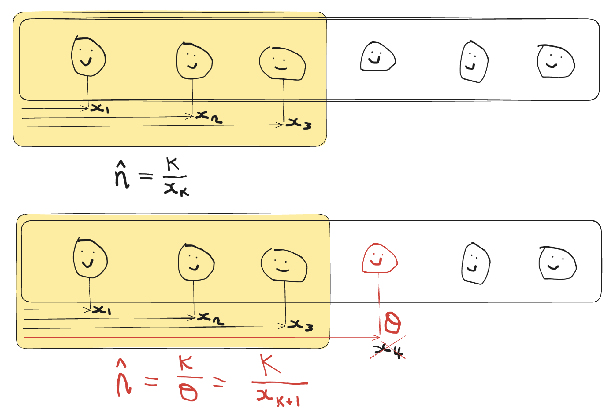
Explicitly Tracking The Threshold
So as well as the sample of hashes from before we're just tracking one more thing: $\theta$. $\theta$ is our threshold, all hashes retained in our sample must be $< \theta$.
When we end up evicting a hash for daring to be too big we set our new threshold value to be the value of the evicted hash.
So let's see how this changes our lovely data type!
New: addAndReturnEvicted
// added to BoundedSortedSet
def addAndReturnEvicted(elem: A): (BoundedSortedSet[A], Option[A]) =
if underlying.size >= maxSize && elem >= underlying.last then (this, None)
else {
val updated = underlying + elem
if updated.size > maxSize then
val evicted = updated.last
(copy(underlying = updated - evicted), Some(evicted))
else
(copy(underlying = updated), None)
}
ApproxSet V3
object ApproxSetV3 {
def empty(maxSampleSize: Int): ApproxSetV3 =
ApproxSetV3(threshold = 1.0, BoundedSortedSet.empty(maxSampleSize))
}
case class ApproxSetV3(
threshold: Double,
hashes: BoundedSortedSet[Double],
) {
def +(item: String): ApproxSetV3 = {
val hash = hashToUnitInterval(item)
if hash >= threshold then this
else {
val (updated, evicted) = hashes.addAndReturnEvicted(hash)
copy(threshold = evicted.getOrElse(threshold), hashes = updated)
}
}
def estimate: Double =
if hashes.underlying.isEmpty then 0.0
else hashes.underlying.size.toDouble / threshold
}
ApproxSet V3: Set Operations
def union(that: ApproxSetV3): ApproxSetV3 = {
val minThreshold = math.min(this.threshold, that.threshold)
val merged = (this.hashes.underlying ++ that.hashes.underlying).filter(_ < minThreshold)
val newMaxSize = math.min(this.hashes.maxSize, that.hashes.maxSize)
if merged.size <= newMaxSize
then ApproxSetV3(minThreshold, BoundedSortedSet(newMaxSize, merged))
else
val kept = merged.take(newMaxSize + 1)
val newThreshold = kept.last
ApproxSetV3(newThreshold, BoundedSortedSet(newMaxSize, kept - newThreshold))
}
def intersect(that: ApproxSetV3): ApproxSetV3 = {
val newThreshold = math.min(this.threshold, that.threshold)
val common = this.hashes.underlying.intersect(that.hashes.underlying)
.filter(_ < newThreshold)
val newMaxSize = math.min(this.hashes.maxSize, that.hashes.maxSize)
ApproxSetV3(newThreshold, BoundedSortedSet(newMaxSize, common))
}
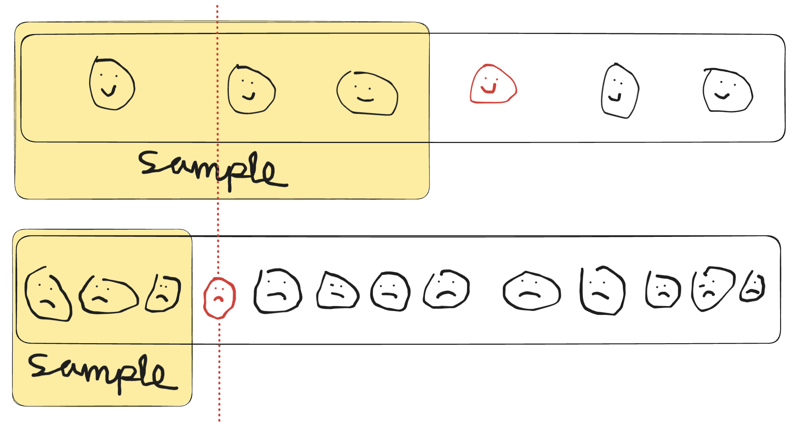
Note: we could theoretically model this as a
BoundedSortedSet
with $k + 1$ elements rather than $k$, where the largest element
is always the threshold. We’ve chosen to use an explicit
threshold field to make the intent clearer.
V3 Fixes the Bias
| Scenario | V2 avg error | V3 avg error |
|---|---|---|
| Single sketch (100k) | +0.32% | -0.08% |
| Single sketch (10k) | +0.37% | -0.01% |
| Intersection (50% overlap) | +0.75% | -0.02% |
| Intersection (10% overlap) | +4.26% | +0.19% |
ApproxSet is essentially a simplified theta sketch.
Accuracy Guarantees
Real theta sketches have well-understood error bounds
RMS (Root Mean Square) relative error $\approx \dfrac{1}{\sqrt{k}}$
With $k = 4096$: error $\approx 1.6\%$
With $k = 16384$: error $\approx 0.8\%$
Even More Food for Thought
Remember set difference from earlier?
Theta sketches support it too. How would you implement it on
ApproxSet?
Once again this is left as an exercise which I'm sure everyone will do
Here is another picture of a cat that my friend took while we
were on holiday. I feel another reward is needed for getting
through the ApproxSet code! This picture was taken
on the UNESCO International Day For Monuments and Sites. What a
day.
The Old System: Stream Analytics
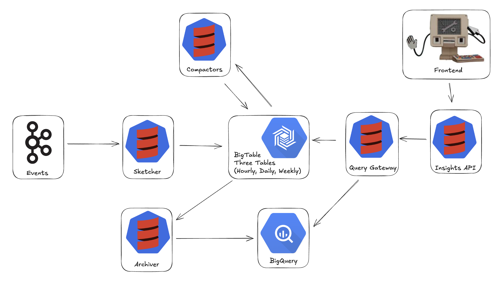
What Went Wrong
- Slow dashboards — the query layer had to locate, deserialise, and merge sketches across stores
- Compaction costs grew with data volume
- Very hard to recover when things went wrong
Apache Pinot
A real-time OLAP database with native sketch support
- Already proven useful in our Plans product
- Handles compaction automatically
- Just write SQL to query it, this is easier to understand and debug than getting sketches from like four different possible places
- Large time-range queries work out of the box
-
distinctCountRawThetaSketch()— aggregates sketches server-side (unions the sketches) - Sub-second query latency at scale
Permutive OSS Contributions to Pinot
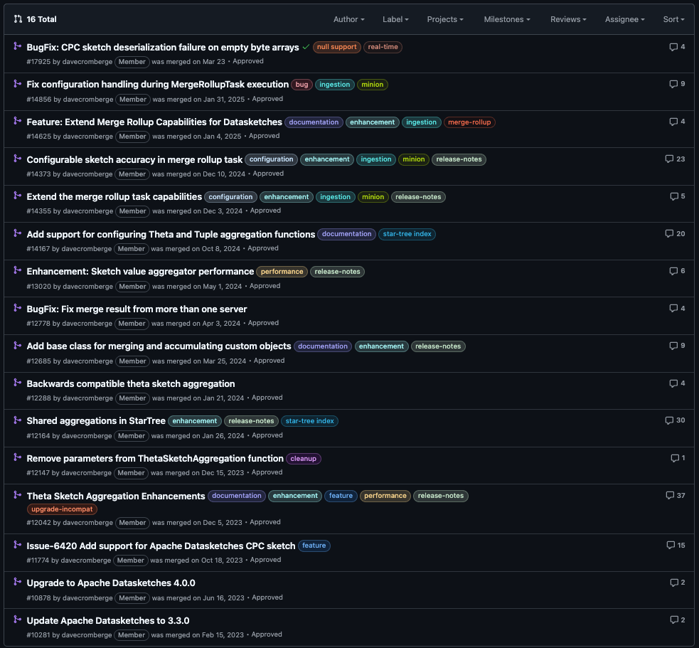
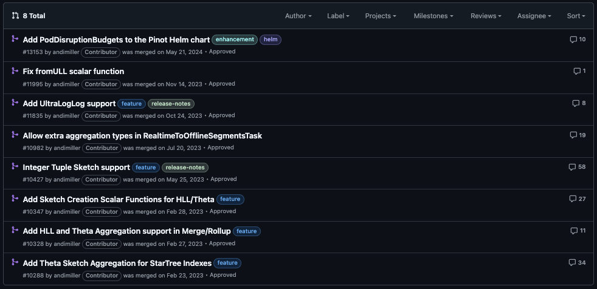
The New System
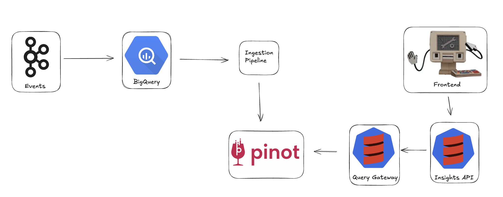
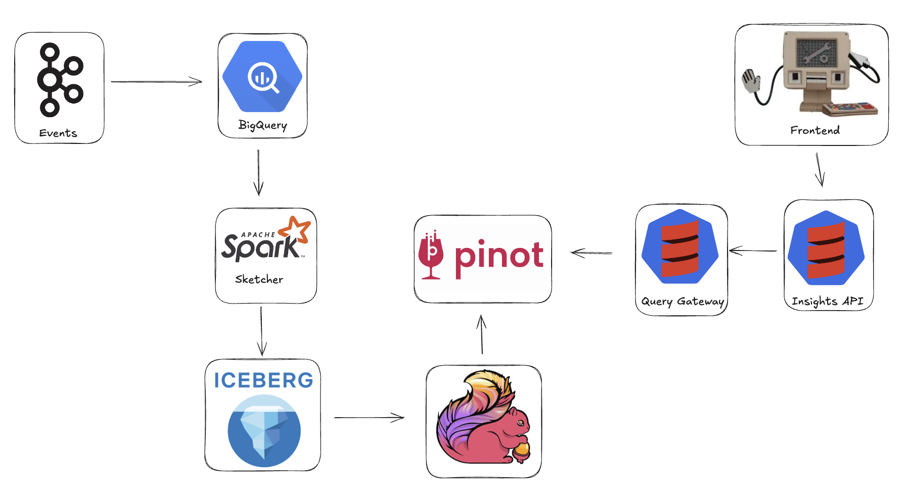
Performance: Time Range
Single cohort, varying time period (1–9 months)
Average response time over 5 requests
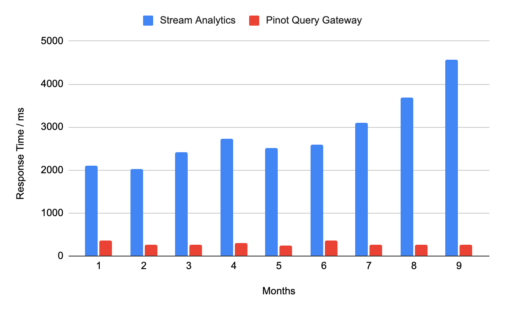
Performance: Cohort Count
One month time period, varying number of cohorts (1–20)
Average response time over 5 requests
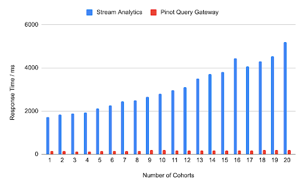
A Real Query
The end is in sight. Given everything we've seen: the
SetExpression datatype, Theta Sketches, and Pinot
let's have a look at how a real insights query works!
Let's look at that dashboard again
The Full Pipeline
- HTTP request arrives with a set expression
- Parse & resolve segment names to Pinot identifiers
-
Fetch sketches from Pinot (in parallel via
parTraverse) - Evaluate the expression tree over sketches
- Compute confidence intervals
- Return cardinality estimate
SetExpression[SegmentName] // what the client sends
↓ resolve
SetExpression[PinotIdentifier] // what we query Pinot with
↓ fetch + evaluate
ThetaBasedSketch // the answer
↓ estimate
CardinalityEstimate // what the client gets back
A Real Query
This real query has two cohorts, two country filters, one platform filter, and is over large time range
In the world of sketches a filter is applied as an intersection
Recall the Final Form of the SetExpression
enum SetExpression[A]:
case Value(value: A)
case Union(union: NonEmptyList[SetExpression[A]])
case Intersect(intersect: NonEmptyList[SetExpression[A]])
A Real Query
Here is what the SetExpression looks like
intersect(
union(
value("country = USA"),
value("country = Canada")
),
value("platform = Web"),
union(
value("cohort = Moderately Engaged Readers"),
value("cohort = Interest - Natural Science")
)
)
// helper functions for readability
def value[A](x: A): SetExpression[A] =
SetExpression.Value(x)
def union[A](xs: SetExpression[A]*): SetExpression[A] =
SetExpression.Union(NonEmptyList.fromListUnsafe(xs.toList))
def intersect[A](xs: SetExpression[A]*): SetExpression[A] =
SetExpression.Intersect(NonEmptyList.fromListUnsafe(xs.toList))
Specialised Optimisation
Remember “once we know what A is, we can do
more”?
The two country values share the same Pinot table and metric
— combine their filters into one
PinotIdentifier
// pseudo-code
// Before: two separate values, two Pinot queries
union(
value(PinotIdentifier(table=GeoInfo, filter=country:USA)),
value(PinotIdentifier(table=GeoInfo, filter=country:Canada))
)
// After: one value, one Pinot query — Pinot unions the sketches for us
value(PinotIdentifier(table=GeoInfo, filters={country:USA, country:Canada}))
Simplifying the Expression
The fact that Pinot itself can union sketches together allows us to simplify our set expression in some cases
Before
intersect(
union(
value("country = USA"),
value("country = Canada")
),
value("platform = Web"),
union(
value("cohort = Moderately Engaged Readers"),
value("cohort = Interest - Natural Science")
)
)
After
intersect(
value("country = USA | Canada"),
value("platform = Web"),
value("cohort = Moderately Engaged Readers | Interest - Natural Science")
)
Evaluation Strategy
How do we evaluate the expression?
- Fetch all sketches up front, then evaluate the tree in memory
- Fetch lazily as we walk the tree (evaluate as we go)
- Something clever in between
I chose option 1 since experimentally it worked better than option
2. It is also rather straightforward and so, easy to reason about,
and lets us fetch in parallel with parTraverse.
foldMap collects all leaf values regardless of tree
shape
Collecting Identifiers
val expression: SetExpression[PinotIdentifier] = ???
// .toList flattens the tree into its leaf values
// regardless of the union/intersect structure
val uniqueIdentifiers: Set[PinotIdentifier] =
expression.toList.toSet
This is the NonEmptyTraverse instance at work
The Implementation
given NonEmptyTraverse[SetExpression] = new NonEmptyTraverse[SetExpression] {
override def nonEmptyTraverse[G[_]: Apply, A, B](
fa: SetExpression[A]
)(f: A => G[B]): G[SetExpression[B]] =
fa match {
case Value(value) => f(value).map(Value.apply)
case Union(operands) => operands.nonEmptyTraverse(_.nonEmptyTraverse(f)).map(Union.apply)
case Intersect(operands) => operands.nonEmptyTraverse(_.nonEmptyTraverse(f)).map(Intersect.apply)
}
override def foldLeft[A, B](fa: SetExpression[A], b: B)(f: (B, A) => B): B =
fa match {
case Value(value) => f(b, value)
case Union(operands) => operands.foldLeft(b)((acc, ex) => foldLeft(ex, acc)(f))
case Intersect(operands) => operands.foldLeft(b)((acc, ex) => foldLeft(ex, acc)(f))
}
// + reduceLeftTo, reduceRightTo, foldRight ...
}
Fetching Sketches from Pinot
SELECT distinctCountRawThetaSketch(
views_theta, 'nominalEntries=65536'
) AS sketch
FROM UserCohortsV1
WHERE workspace_id IN ('some-workspace-id')
AND ((
aggregation_name = 'segment'
AND event_time_day >= 1739318400000
AND event_time_day < 1739750400000
AND value = '2712828' -- Moderately Engaged Users
)
OR (
aggregation_name = 'segment'
AND event_time_day >= 1739318400000
AND event_time_day < 1739750400000
AND value = '3145' -- Interest - Natural Sciences
))
…and similar queries for country and platform sketches from other tables
One Query, One Sketch
Pinot returns a single pre-aggregated sketch per query
The old system would have returned many individual sketches that we’d have to merge client-side
Final Evaluation
We now have three sketches — one per dimension
intersect(
value(countrySketch),
value(platformSketch),
value(cohortSketch)
)
One intersection, computed in memory — and we have our answer
Evaluating Expressions
Now A is a Pinot identifier — and we evaluate
over sketches
def executeSetExpression(
sketchMap: Map[PinotIdentifier, Sketch],
queryAccuracy: SketchLgSize,
expression: SetExpression[PinotIdentifier],
cf: ConsolidationFunction
): ThetaBasedSketch = {
def loop(executable: SetExpression[PinotIdentifier]): ThetaBasedSketch =
executable match {
case Value(id) => sketchMap.getOrElse(id, emptySketch)
case Union(operands) =>
operands.map(loop) match {
case NonEmptyList(head, Nil) => head
case nel => union(queryAccuracy, cf)(nel)
}
case Intersect(operands) =>
operands.map(loop) match {
case NonEmptyList(head, Nil) => head
case nel => intersect(queryAccuracy, cf)(nel)
}
}
loop(expression)
}
Union & Intersect
def union(queryAccuracy: SketchLgSize, cf: ConsolidationFunction)(
nel: NonEmptyList[ThetaBasedSketch]
): ThetaBasedSketch = nel
.foldLeft(SketchUnion.union(queryAccuracy, cf))((op, sketch) => op.apply(sketch))
.resultFast
def intersect(queryAccuracy: SketchLgSize, cf: ConsolidationFunction)(
nel: NonEmptyList[ThetaBasedSketch]
): ThetaBasedSketch = nel
.foldLeft(SketchIntersection.intersect(queryAccuracy, cf))((op, sketch) => op.apply(sketch))
.resultFast
Just a foldLeft over the real DataSketches operations
Oh and let's not worry too much about what that consolidation function is just yet lol
Beyond Counting
Theta sketches answer “how many unique users?”
But what about “what is the average time spent per user?”
Tuple Sketches
Each hash can carry an associated value (e.g. total engaged seconds)
| Exact | Approximate | |
|---|---|---|
| Membership | Set[A] |
ThetaSketch |
| Membership + Value | Map[A, Int] |
TupleSketch |
Consolidation Functions
When combining tuple sketches, how do we merge values for the same key?
enum ConsolidationFunction:
case Sum // total time spent
case Max // longest session
case Min // shortest session
Same set operations (union, intersection) — but values get combined using the consolidation function
It's giving Monoid
What This Enables
- Mean time spent per user in an audience
- Average page views per user
- Video completion rates
- …all with the same set expression evaluation engine
Another exercise for the reader: create an ApproxMap in
the same spirit as ApproxSet
And here we are at the end of our journey. Please enjoy this final holiday picture which was taken at the end of my journey through some ruins before I wrap up
Key Takeaways
- Don't be afraid to challenge assumptions about legacy systems
-
Theta sketches solve count-distinct approximately and support
standard set operations
- Other types of sketch support different operations and features
- e.g. tuple sketches behave like approximate maps
- e.g. HLL Sketches are smaller than theta sketches but do not support intersections natively
- Sometimes approximations can be good enough
- Leveraging OSS can be extremely useful, Pinot and DataSketches did a lot of the hard work for us
Key Takeaways
- “Type Driven Development” can be really very helpful in understanding customer problems
-
Creating toy versions of things can help build intuition, it took
me a few iterations to get
ApproxSetright, but now I understand real sketches slightly better probably - None of these points are massively ground breaking or original
- But I still believe them to be important and true
Thank You
Questions?
References
- Counting Tanks with Statistics (YouTube) — estimating population size from a sample
- Apache DataSketches — Theta Sketches
- Apache Pinot
- Theta Sketch Mathematical Framework (PDF)